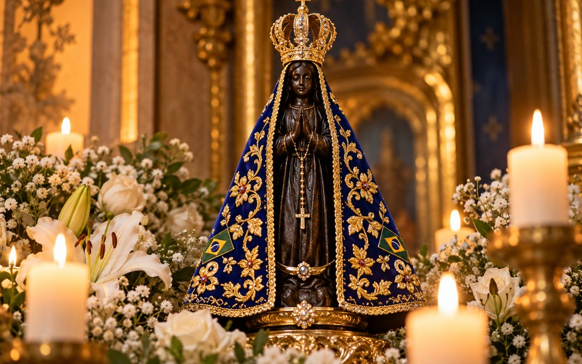

Uma história que começou em 1717
Três pescadores encontraram uma pequena imagem no rio Paraíba do Sul. Dali nasceu uma devoção que se espalhou pelo país.
Conhecer a históriaO Santuário Nacional
A cidade de Aparecida recebe pessoas de muitas regiões do Brasil para momentos de oração e encontro.
Conhecer o Santuário
Por que 12 de outubro?
O dia dedicado à Padroeira do Brasil é também feriado nacional, marcado por celebrações e romarias.
Entender a dataNossa Senhora Aparecida
O dia 12 de outubro convida a conhecer uma história que faz parte da cultura e da fé de muitos brasileiros.
O encontro da imagem
Em 1717, os pescadores João Alves, Felipe Pedroso e Domingos Garcia encontraram uma imagem de Nossa Senhora da Conceição nas águas do rio Paraíba do Sul, na região de Guaratinguetá (SP). Segundo a tradição, depois do encontro veio uma pesca abundante. A imagem passou a ser conhecida como Nossa Senhora Aparecida.
Um destino de peregrinação
Com o crescimento da devoção, Aparecida se tornou um importante destino religioso. O Santuário Nacional acolhe romeiros que chegam para rezar, agradecer e conhecer a história da Padroeira do Brasil.
A celebração de 12 de outubro
Nessa data, comunidades realizam missas, procissões e outras expressões de devoção. O dia 12 de outubro é feriado nacional dedicado a Nossa Senhora Aparecida, conforme a Lei nº 6.802, de 1980.